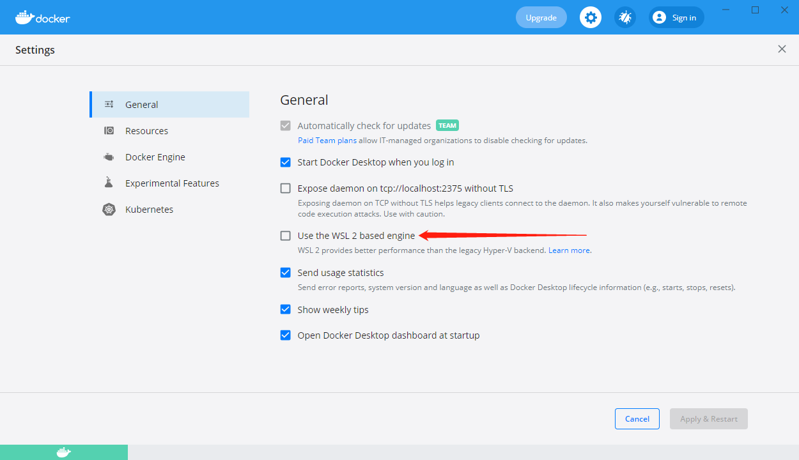
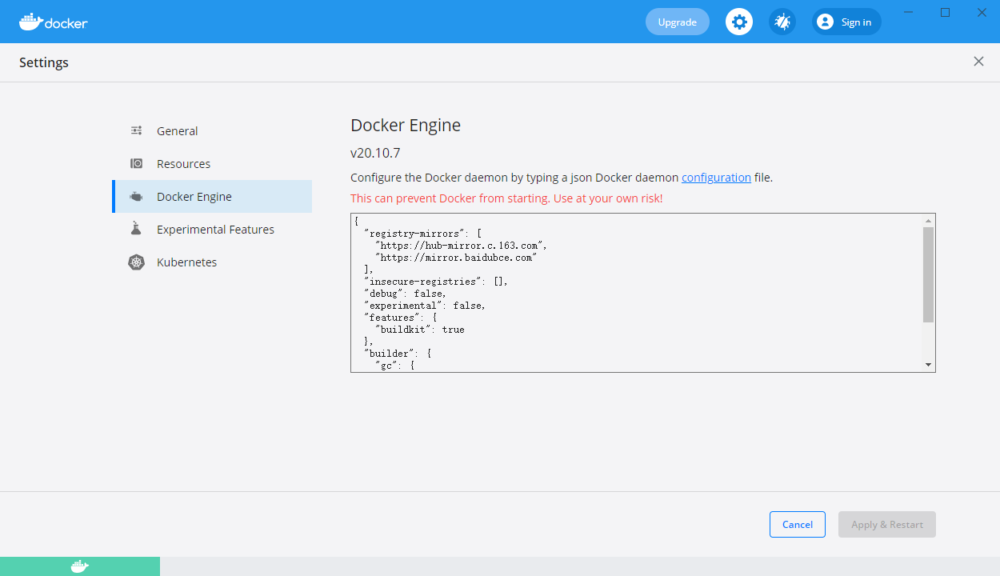
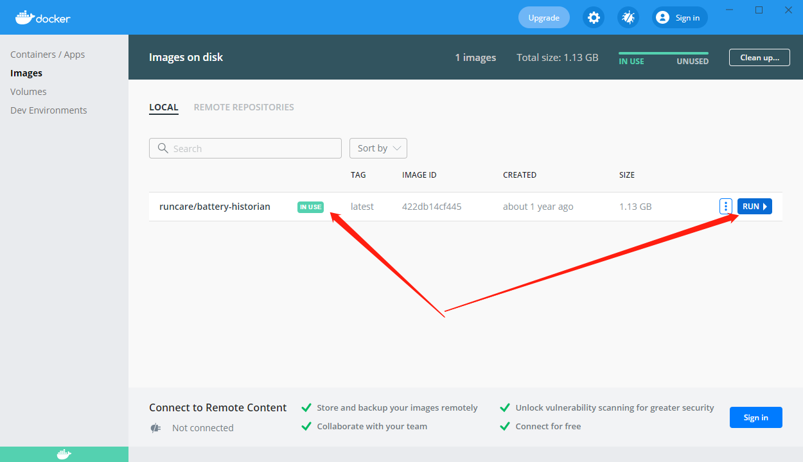
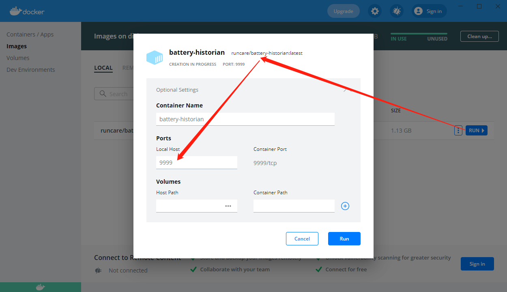
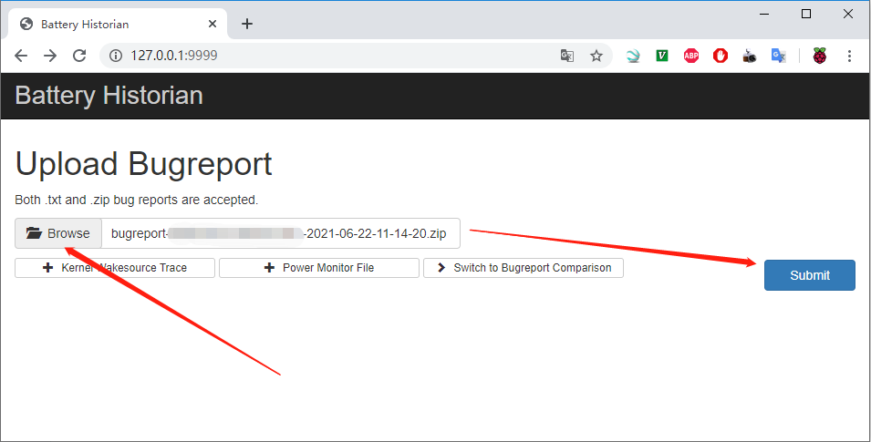
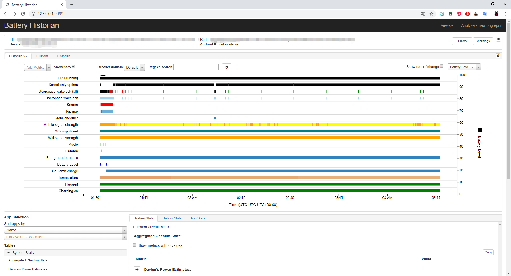
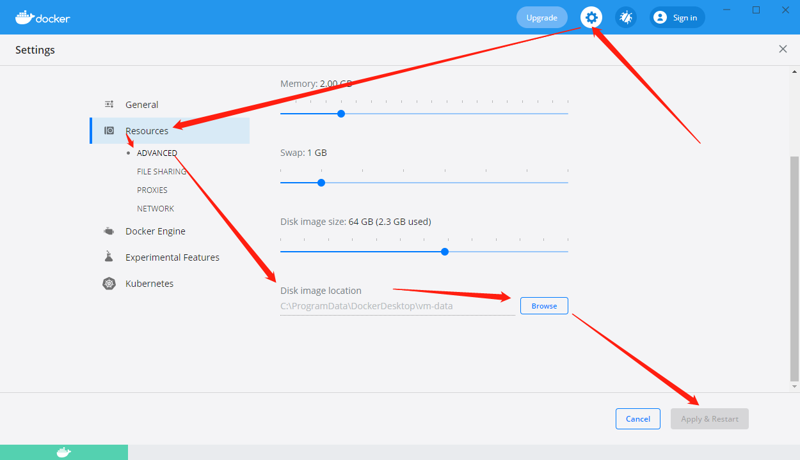

Android BatteryStats Docker
采用Docker形式的Battery Historian v3.1分析BatteryStats，以及电源分析示例
参考文档
batterystats
adb shell dumpsys batterystats –enable full-wake-history
adb shell dumpsys batterystats –reset
USB拔出
等待测试功耗完成
USB插入
adb shell dumpsys batterystats > batterystats.txt
或者
adb shell dumpsys batterystats –history
bug report
adb shell dumpsys batterystats –enable full-wake-history
adb shell dumpsys batterystats –reset
USB拔出
等待测试功耗完成
USB插入
adb bugreport
Docker Desktop
https://www.docker.com/products/docker-desktop
Disable WSL 2 based engine
主要是不想安装WSL，只是简单的使用一下Docker，感觉没必要，又不是经常用

镜像站配置
https://yeasy.gitbook.io/docker_practice/install/mirror

config
{ "registry-mirrors": [ "https://hub-mirror.c.163.com", "https://mirror.baidubce.com" ], "insecure-registries": [], "debug": false, "experimental": false, "features": { "buildkit": true }, "builder": { "gc": { "enabled": true, "defaultKeepStorage": "20GB" } } }
cmd:
docker info...省略 Registry: https://index.docker.io/v1/ Labels: Experimental: false Insecure Registries: 127.0.0.0/8 Registry Mirrors: https://hub-mirror.c.163.com/ https://mirror.baidubce.com/ Live Restore Enabled: false
Battery Historian
docker pull runcare/battery-historian

选中，配置，然后点击运行

Web访问，听说这个也需要能访问Google才行，不过貌似有些地方又不需要，看情况，如果不行就用工具，可以就不用工具

正常显示数据，Historian V2能够正常显示，Historian那个页面还是不能正常显示

系统镜像在哪里
默认系统是下载在了C盘，比较尴尬

选择新的路径，会自动把系统拷贝过去，并清理之前的目录，点赞；